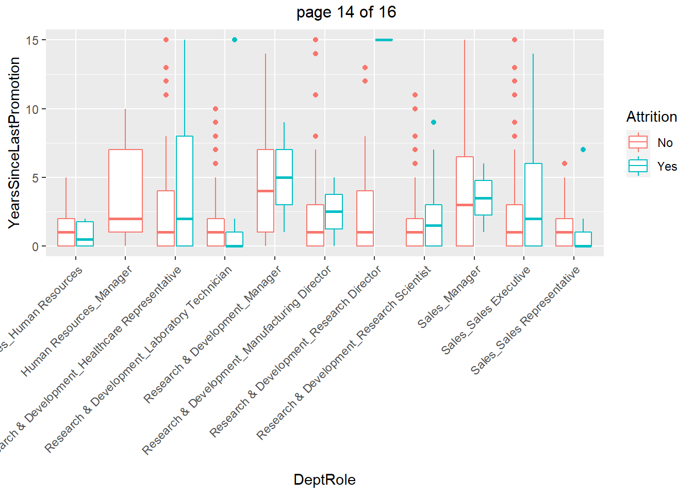
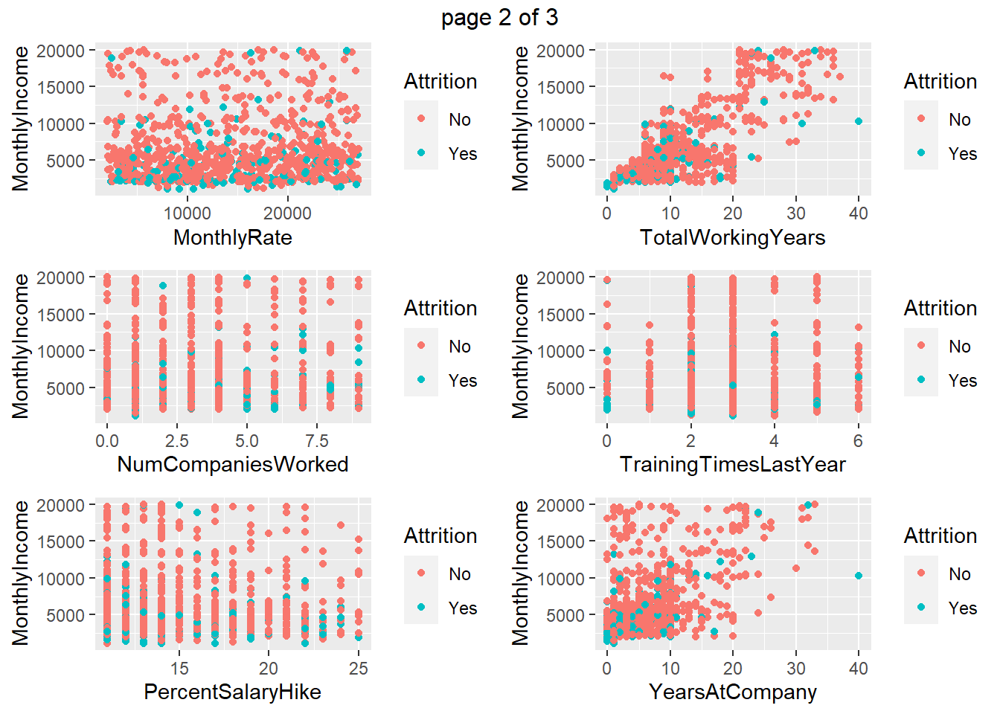

CaseStudy2
Dawkins
2/6/2021
Libraries
library(tidyr)
library(readr)
library(dplyr)
library(ggplot2)
library(gridExtra)
library(caret)
library(e1071)Load Data
CaseStudy2_data <- read_csv("CaseStudy2-data.csv")##
## -- Column specification ------------------------------------------------
## cols(
## .default = col_double(),
## Attrition = col_character(),
## BusinessTravel = col_character(),
## Department = col_character(),
## EducationField = col_character(),
## Gender = col_character(),
## JobRole = col_character(),
## MaritalStatus = col_character(),
## Over18 = col_character(),
## OverTime = col_character()
## )
## [36mi[39m Use `spec()` for the full column specifications.# Columns that need to be removed
removed_columns = c("ID", "EmployeeCount", "StandardHours")
# Numerical Columns that, need to be converted to factors
num_fact = c("Attrition","RelationshipSatisfaction", "StockOptionLevel", "WorkLifeBalance", "JobSatisfaction", "PerformanceRating", "EnvironmentSatisfaction", "JobInvolvement", "JobLevel", "Education")
# Remove "removed_columns" from data set
# Create "Legacy" column and unite "Department" & "JobRole"
df <- as.data.frame(CaseStudy2_data) %>%
select(-all_of(removed_columns)) %>%
mutate(Legacy = YearsInCurrentRole*TotalWorkingYears*JobLevel*EnvironmentSatisfaction*MonthlyIncome*Age) %>%
unite("DeptRole",Department, JobRole)
# Convert "num_fact" cols to factors
for (i in 1:length(num_fact)){
df[,num_fact[i]] <- as.factor(df[,num_fact[i]])
}
# Selects all "char" & "factor" columns
df_char_fac <- df %>%
select_if(function(col) is.character(col) | is.factor(col))
# Selects all "numeric" columns and keeps the "Attrition" column
df_nums <- df %>%
select_if(function(col) is.numeric(col))
# Summary
summary(df$Attrition)## No Yes
## 730 140summary(df$MonthlyIncome)## Min. 1st Qu. Median Mean 3rd Qu. Max.
## 1081 2840 4946 6390 8182 19999Box Plot: YearsInCurrentRole vs Dept Role
# Box Plot: YearsInCurrentRole vs Dept Role
plot_yrRole_deptRole <- df %>%
ggplot(aes_string(y="YearsInCurrentRole",x="DeptRole", color="Attrition"))+
geom_boxplot()+
theme(axis.text.x=element_text(angle=45,hjust=1))
plot_yrRole_deptRoleBox Plot: YearsWithCurrManager vs Dept Role
# Box Plot: YearsWithCurrManager vs Dept Role
plot_yrMgr_deptRole <- df %>%
ggplot(aes_string(y="YearsWithCurrManager",x="DeptRole", color="Attrition"))+
geom_boxplot()+
theme(axis.text.x=element_text(angle=45,hjust=1))
plot_yrMgr_deptRoleBar Graph: Attritionn Count by Dept Role
bar_attr_deptRole <- df %>%
ggplot(aes_string(x="DeptRole", fill="Attrition"))+
geom_bar(position = "dodge")+
geom_text(stat='count', aes(label=..count..), vjust=-1)+
theme(axis.text.x=element_text(angle=45,hjust=1))
bar_attr_deptRoleBuild and Cross Validate Naive Bayes Model
# Features included in the model
features <- c("MaritalStatus", "OverTime", "DeptRole", "Legacy", "MonthlyIncome", "TotalWorkingYears", "YearsInCurrentRole", "StockOptionLevel", "DistanceFromHome", "YearsAtCompany","BusinessTravel", "JobInvolvement")
iterations = 100
# Initialize Matrix
masterAcc = matrix(nrow=iterations)
masterSens = matrix(nrow=iterations)
masterSpcf = matrix(nrow=iterations)
# Set split percentage
splitPerc = .7
# Loop through model runs
set.seed(5)
for(j in 1:iterations)
{
# Get trainIndices
trainIndices = sample(1:dim(df)[1], round(splitPerc*dim(df)[1]))
# Get train data frame
train = df[trainIndices,]
# Get test data frame
test = df[-trainIndices,]
# Create model using the train data frame
model = naiveBayes(train[,features], train$Attrition)
# Create table
table(predict(model, test[,features]), test$Attrition)
# Get Confusion Matrix
CM = confusionMatrix(table(predict(model, test[,features]), test$Attrition), positive = "Yes")
# Pull Accuracy, Sensitivity and Specification from confusion matrix
masterAcc[j] = CM$overall[1]
masterSens[j] = CM$byClass[1]
masterSpcf[j] = CM$byClass[2]
}
# Get mean for pulled stats
MeanAcc = colMeans(masterAcc)
MeanSens = colMeans(masterSens)
MeanSpcf = colMeans(masterSpcf)
# Print stats
MeanAcc## [1] 0.7806897MeanSens## [1] 0.6476431MeanSpcf## [1] 0.8062515Make Prediction csv for Attrition Comp Set
library(readxl)
# Load Attrition Comp Set
CaseStudy2CompSet_No_Attrition <- read_csv("CaseStudy2CompSet No Attrition.csv")##
## -- Column specification ------------------------------------------------
## cols(
## .default = col_double(),
## BusinessTravel = col_character(),
## Department = col_character(),
## EducationField = col_character(),
## Gender = col_character(),
## JobRole = col_character(),
## MaritalStatus = col_character(),
## Over18 = col_character(),
## OverTime = col_character()
## )
## [36mi[39m Use `spec()` for the full column specifications.# Add Legacy column and unite "Department" and "Jobrole" column
df_no_attr <- as.data.frame(CaseStudy2CompSet_No_Attrition) %>%
mutate(Legacy = YearsInCurrentRole*Education*StockOptionLevel*JobLevel*EnvironmentSatisfaction*RelationshipSatisfaction*MonthlyIncome/Age) %>%
unite("DeptRole",Department, JobRole)
# Create Model using "features" defined in previous code block
model = naiveBayes(df[,features], df$Attrition)
# Get and save model predictions with ID label, to table_predictions
model_predictions = predict(model, df_no_attr[,features])## Warning in predict.naiveBayes(model, df_no_attr[, features]): Type
## mismatch between training and new data for variable 'StockOptionLevel'.
## Did you use factors with numeric labels for training, and numeric values
## for new data?## Warning in predict.naiveBayes(model, df_no_attr[, features]): Type
## mismatch between training and new data for variable 'JobInvolvement'.
## Did you use factors with numeric labels for training, and numeric values
## for new data?model_predictions = as.data.frame(model_predictions)
df_no_attr_id = as.data.frame(df_no_attr$ID)
# Renam columns
colnames(model_predictions) <- "Attrition"
colnames(df_no_attr_id) <- "ID"
# Bind colummns
attr_table_perdictions = cbind(df_no_attr_id, model_predictions)
# Write table_perdictions to CSV
write.csv(attr_table_perdictions, file = "Case2PredictionsClassifyDawkins.csv", row.names=FALSE)Build and Cross Validation Multiple Regression Model
df_salary <- as.data.frame(CaseStudy2_data) %>%
select(-all_of(removed_columns))
# New Cross Validation
set.seed(4)
## More Stable Measure ... Average of many MSPEs
numMSPEs = 500
RMSE = numeric(numMSPEs)
AdjRSquared = numeric(numMSPEs)
RSquared = numeric(numMSPEs)
for (i in 1:numMSPEs)
{
TrainObs = sample(seq(1,dim(df_salary)[1]),round(.75*dim(df_salary)[1]),replace = FALSE)
salary_train = df_salary[TrainObs,]
salary_test = df_salary[-TrainObs,]
salary_model = lm(MonthlyIncome ~ TotalWorkingYears+BusinessTravel+
JobLevel*JobRole, data = salary_train)
salary_model_predictions = predict(salary_model, newdata = salary_test)
RMSE[i] = sqrt(mean(salary_model$residuals^2))
RSquared[i] = summary(salary_model)$r.squared
AdjRSquared[i] = summary(salary_model)$adj.r.squared
}## Warning in predict.lm(salary_model, newdata = salary_test): prediction
## from a rank-deficient fit may be misleading
## Warning in predict.lm(salary_model, newdata = salary_test): prediction
## from a rank-deficient fit may be misleading
## Warning in predict.lm(salary_model, newdata = salary_test): prediction
## from a rank-deficient fit may be misleading
## Warning in predict.lm(salary_model, newdata = salary_test): prediction
## from a rank-deficient fit may be misleading
## Warning in predict.lm(salary_model, newdata = salary_test): prediction
## from a rank-deficient fit may be misleading
## Warning in predict.lm(salary_model, newdata = salary_test): prediction
## from a rank-deficient fit may be misleading
## Warning in predict.lm(salary_model, newdata = salary_test): prediction
## from a rank-deficient fit may be misleading
## Warning in predict.lm(salary_model, newdata = salary_test): prediction
## from a rank-deficient fit may be misleading
## Warning in predict.lm(salary_model, newdata = salary_test): prediction
## from a rank-deficient fit may be misleading
## Warning in predict.lm(salary_model, newdata = salary_test): prediction
## from a rank-deficient fit may be misleading
## Warning in predict.lm(salary_model, newdata = salary_test): prediction
## from a rank-deficient fit may be misleading# R Squared
mean(RMSE)## [1] 973.7647# Adj R Squared
mean(RSquared)## [1] 0.9549344# Root Mean Square Error
mean(AdjRSquared)## [1] 0.9535076Make Prediction csv for Attrition Comp Set
CaseStudy2CompSet_No_Salary <- read_excel("CaseStudy2CompSet No Salary.xlsx")
df_no_salary <- as.data.frame(CaseStudy2CompSet_No_Salary)
# Create MLR model, using data with a salary
salary_model = lm(MonthlyIncome ~ TotalWorkingYears+BusinessTravel+
JobLevel*JobRole, data = df_salary)
# Get and save model predictions with ID label, to table_predictions
salary_model_predictions = predict(salary_model, newdata = df_no_salary)
salary_model_predictions = as.data.frame(salary_model_predictions)
# Save as Dataframe
df_no_salary_id = as.data.frame(df_no_salary$ID)
# Rename Columns
colnames(salary_model_predictions) <- "MonthlyIncome"
colnames(df_no_salary_id) <- "ID"
# Bind columns
salary_table_perdictions = cbind(df_no_salary_id, salary_model_predictions)
# Write table_perdictions to CSV
write.csv(salary_table_perdictions, file = "Case2PredictionsRegressDawkins.csv", row.names=FALSE)Executive Summary:
The attrition model had an average accuracy of ~78%, an average specification of ~81% and an average sensitivity of ~65%. A Legacy attribute was derived from existing features in the data set and was applied to each employee, to aid in the predicting attrition.
The salary model had root mean square error of $962 and Adj. R-squared of 94.8%.
Other interesting trends: - There was no attrition amongst the human resource managers and 100% - Non managers, at 22%, have the second highest turnover rate
All sales managers who left, left after 8-12 years with their current manager
Sales Reps, at 45%, has the highest turnover rate
R&D Research Scientist who left,left the company within first 5 years in their current role
R&D Research Scientist ~20% and R&D Lab Techs ~19% are have the third and fourth highest turnover rates
Appendix:
Get Box Plots for Numerical Columns
# Initiate plot list
plot_list <- list()
# Loop through numerical features and plot
for (i in 1:ncol(df_nums)) {
plot_list[[i]] <- df %>%
ggplot(aes_string(y=colnames(df_nums)[i],x="DeptRole", color="Attrition"))+
geom_boxplot()+
theme(axis.text.x=element_text(angle=45,hjust=1))
}
# Plot all plots in plot_list
marrangeGrob(grobs = plot_list,
nrow=1, ncol=1)
Get Scatter Plots for Numerical Columns
# Initiate plot list
plot_list <- list()
# Loop through numerical features and plot
for (i in 1:ncol(df_nums)) {
plot_list[[i]] <- df %>%
ggplot(aes_string(x=colnames(df_nums)[i], y="MonthlyIncome", color="Attrition"))+
geom_point()
}
# Plot all plots in plot_list
marrangeGrob(grobs = plot_list,
nrow=3, ncol=2)
Get Tile Plots for Char_Fac Columns
# Initiate plot list
plot_list <- list()
# Constant Variable
const_var <- "MaritalStatus"
# Loop through character factors and plot
for (i in 1:ncol(df_char_fac)) {
plot_list[[i]] <- df %>%
dplyr::count(!!as.name(colnames(df_char_fac)[i]), !!as.name(const_var)) %>%
ggplot(aes_string(x=colnames(df_char_fac)[i], y=const_var)) +
geom_tile(mapping=aes(fill=n))+
theme(axis.text.x=element_text(angle=90,hjust=1))
}
# Plot all plots in plot_list
marrangeGrob(grobs = plot_list,
nrow=1, ncol=1)
Get Bar Graphs fod Categorical
# Initiate plot list
plot_list <- list()
# Loop through character factors and plot
for (i in 1:ncol(df_char_fac)) {
plot_list[[i]] <- df %>%
ggplot(aes_string(x=colnames(df_char_fac)[i], fill="Attrition"))+
geom_bar(position = "dodge")+
theme(axis.text.x=element_text(angle=45,hjust=1))
}
# Plot all plots in plot_list
marrangeGrob(grobs = plot_list,
nrow=1, ncol=1)